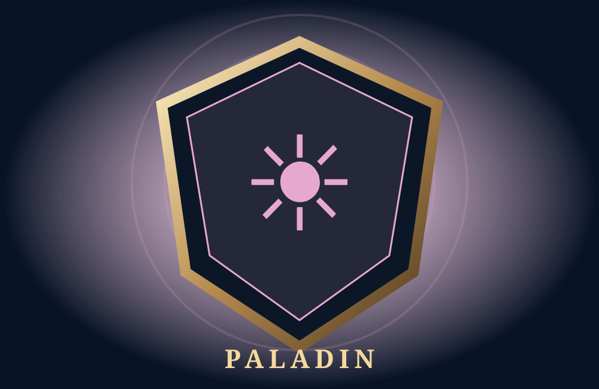
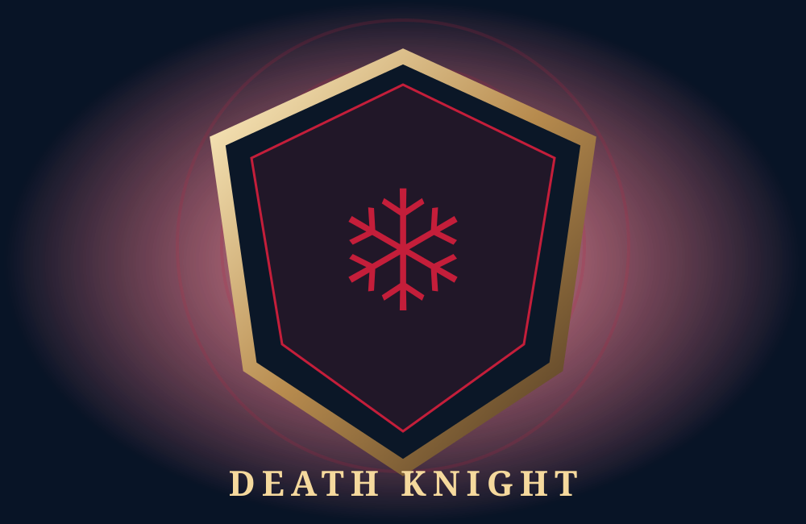

CLASS 01
Paladin
Tank · Healer · Damage
Holy light, plate armor, and a strong sense of duty make the Paladin stand out to me. I like how this class can protect allies while still dealing damage.
WEEK 04 · EXERCISE 02
World of Warcraft offers so many different ways to experience Azeroth. This collection highlights six classes that stand out to me for their combat styles, fantasy themes, and unique abilities.

CLASS 01
Tank · Healer · Damage
Holy light, plate armor, and a strong sense of duty make the Paladin stand out to me. I like how this class can protect allies while still dealing damage.
CLASS 02
Tank · Damage
The Warrior captures the straightforward excitement of charging into battle with heavy armor and powerful weapons. Its classic fantasy style makes it memorable.

CLASS 03
Tank · Damage
The Death Knight brings a darker side of Warcraft, with runic weapons, frost, and undead magic. I enjoy the dramatic look and backstory behind the class.
CLASS 04
Damage · Ranged
The Hunter is interesting because of its animal companions and ability to explore the world from a distance. The bond between a hunter and pet adds personality.
CLASS 05
Damage · Ranged
Mages bring some of the most recognizable spell effects in Warcraft. Fire, frost, and arcane magic make this class visually exciting and versatile.
CLASS 06
Damage · Ranged
The Warlock has a unique identity built around demons, curses, and fel magic. Its eerie green effects make it one of the most distinctive classes in Azeroth.